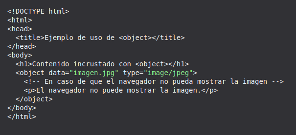
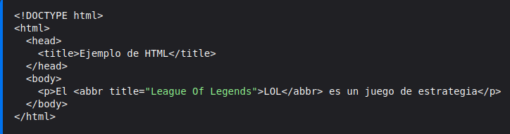
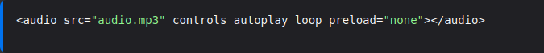
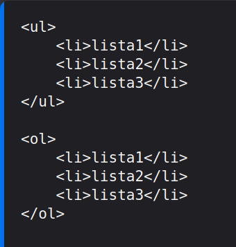
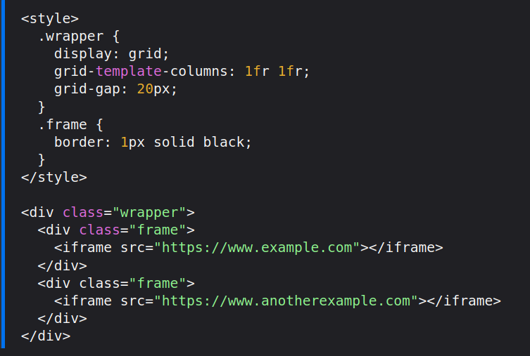
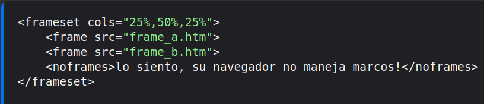
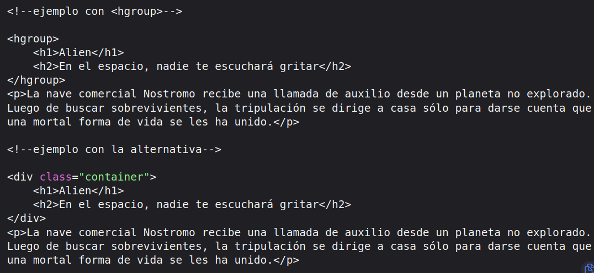
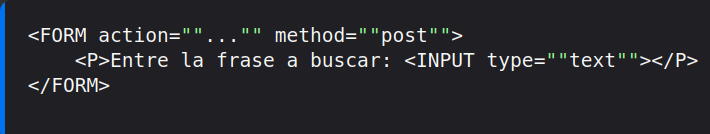
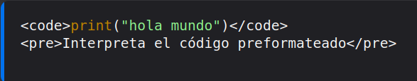
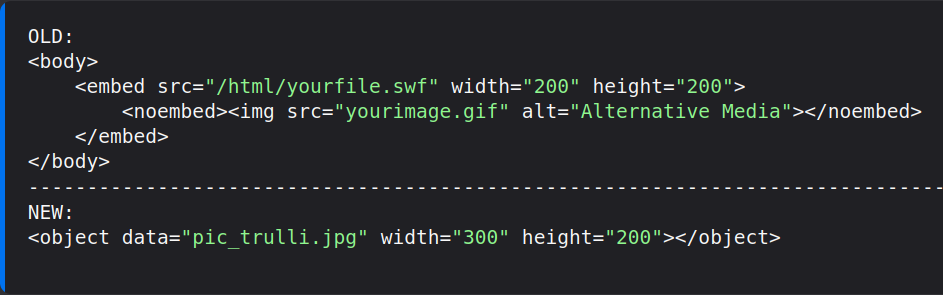

Un applet es un programa, componente o aplicación que se ejecuta dentro del contexto de otro programa o aplicación escrito en JAVA.
<object>

Andrés Felipe Pardo Hernández
<acronym>
No aplica
Se utilizaba en HTML para definir un acronimo o abreviar palabras en el contenido web
<abbr>

Angie Nathalia Cárdenas Pinzón
<bgsound>
No aplica
Incorpora sonidos de fondo que se ejecuta cuando se entra a la pagina. Solo es interpretada por Internet Explorer. Acepta formatos Mp3, MID, AU y WAV.
<audio>, No funciona sin atributos de control, controls, autoplay y preload.

Angie Tatiana Duran Leon
<dir>
No aplica
La etiqueta <dir> era una etiqueta obsoleta en HTML que se utilizaba para
crear una lista de elementos de directorio. Cada elemento en la lista representaba
un ítem dentro de un directorio, como una carpeta en un sistema de archivos
actualmente se recomienda utilizar <ul></ul> listas no ordenadas y <ol></ol> listas ordenadas junto con
<li> que es el elemento de la lista

Cristian Camilo Pardo Hernandez
<frameset>
No aplica
Los marcos (frames) son áreas separadas y ajustables dentro de una página web
donde se pueden cargar diferentes documentos HTML.
CSS Grid o <div>

Daniel Felipe Rincon Guerrero
<noframes>
No aplica
Se usó en HTML 4 para actuar como una etiqueta alternativa para los navegadores que no admitían marcos.
NO APLICA

David Andrés Santos Mosquera
No aplica
<hgroup>
El elemento hgroup representa al bloque de encabezado de una sección y usualmente agrupa encabezados consecutivos (h1 a h6). Un encabezado de niveles múltiples puede ser usado para proveer subtítulos, títulos alternativos o eslóganes.
<div class="container">

Edgar Mauricio Pinzón Monsalve
<isindex>
No aplica
Esta etiqueta se utilizaba para insertar un input de texto , y lo que escribes es buscado en el html
se usa la etiqueta <input> que debe estar dentro de la etiqueta <form>

Jaider Steveen Mendoza Cardona
<listing>,<xmp>
No aplica
Listing fue una etiqueta similar a **pre** o **code**, es decir, se utilizaba para insertar codigo y que no fuera interpretado, sino estilizado visualmente.
El elemento HTML XMP <xmp> dibuja texto entre las etiquetas de inicio y fin sin interpretar el HTML que se encuentra en medio y lo muestra usando un tipo de letra monoespaciada"
<pre> <code>

Jershon Orlando Espitia Rey
<noembed>
No aplica
El elemento HTML <<noembed> es una forma obsoleta y no estándar de proporcionar contenido alternativo para navegadores que no admiten el elemento <embed> o no admiten el tipo de contenido incrustado que un autor desea usar. El Elemento HTML Embed ( <embed> ) representa un punto de integración para una aplicación externa o de contenido interactivo.
<object>

Juan David Guiza Garcia
<basefont>
No aplica
Es una etiqueta que se usaba con la finalidad de darle estilo a los textos no es reconmendable ni se usa en la actualidad